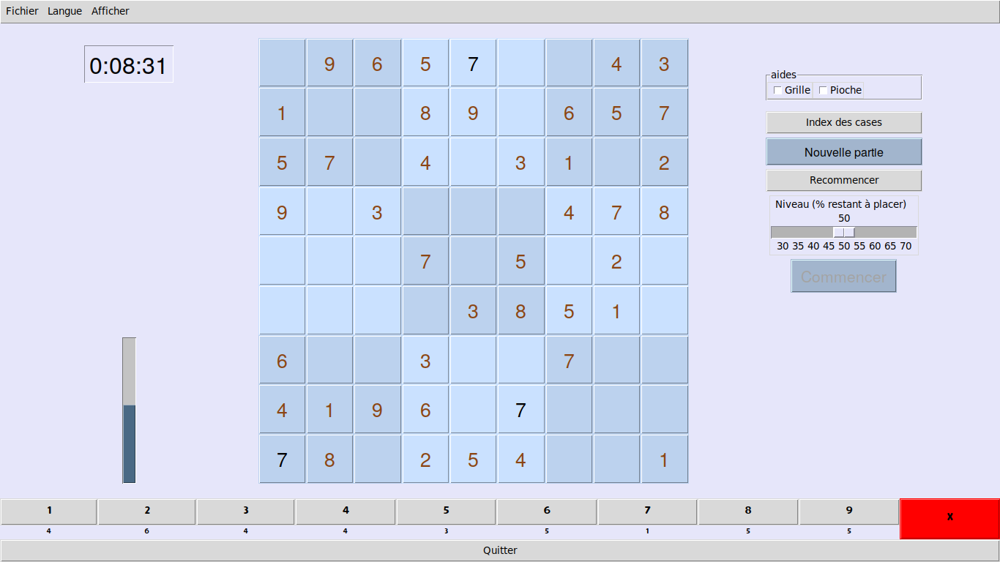

Diplôme Inter-Universitaire
Projet Sudoku
Table des matières
1 Consignes
Production d'un rapport de 20 pages maximum : expliquer l'interface homme-machine, expliquer le code, expliquer la démarche et les difficultés rencontrées, extraction d'activités NSI en séances (hors projets filés) en lien avec les compétences décrites dans le programme NSI de Première.
2 Interface homme-machine
2.1 Au démarrage
Au démarrage (figure 1) la grille de Sudoku apparaît vide au centre de la fenêtre. Sur la gauche, la jauge de remplissage est vide. La pioche, au bas de la fenêtre, indique que neuf symboles de chaque sorte restent à placer sur la grille.
Sur la droite, un bouton Nouvelle partie de couleur distinctive permet d'amorcer une nouvelle partie.

Figure 1 : au démarrage
2.2 Nouvelle partie
La grille est tirée de façon aléatoire et secrète. La pioche, au bas de la fenêtre (figure 2) est vide: elle indique que tous les symboles ont été placés sur la grille. Sur la gauche, la jauge de remplissage est pleine. Sur la droite, un curseur est apparu, il permet de choisir le niveau de difficulté. Un bouton Commencer de couleur distinctive permet au joueur de commencer la partie.

Figure 2 : choix du niveau
2.3 Début de partie
La grille pleine est vidée aléatoirement jusqu'à atteindre le niveau souhaité par le joueur. La jauge de remplissage et la pioche se retrouvent partiellement remplies. La grille est révélée au joueur et les cases dors et déjà remplies sont gelées : le joueur ne peut plus ni les effacer ni les modifier. Sur la gauche, le chronomètre est mis en marche et décompte le temps qui s'écoule.

Figure 3 : début de partie
2.4 Placer un symbole sur la grille
Pour placer un symbole sur la grille, le joueur commence par sélectionner le symbole qu'il souhaite placer soit en le choisissant sur la grille, soit en le choisissant dans la pioche. Le symbole sélectionné apparaît alors d'une couleur distinctive (figure 4).
Figure 4 : sélectionner un symbole
Le joueur clique alors sur une case vide pour y placer le symbole. Si la case est susceptible d'accepter le symbole celui est placé (figure 5). La pioche et la jauge de remplissage évoluent en conséquence.
Figure 5 : placer un symbole
2.5 Effacer un symbole de la grille
Pour effacer un symbole, le joueur sélectionne le bouton d'effacement X à droite de la pioche. Ce bouton apparaît alors en rouge (figure 6). Ce bouton agit en bascule: si le joueur clique dessus une nouvelle fois, on sort du mode effacement. On peut aussi en sortir en sélectionnant un autre symbole.
Quand le mode effacement est actif, à chaque fois que le joueur clique sur une case pleine de la grille, celle-ci est effacée. La pioche et la jauge de remplissage évoluent en conséquence.

Figure 6 : effacer un symbole
2.6 Menus
En haut de la fenêtre se trouve la barre de menu qui comporte:
- le menu fichier (figure 7) qui permet notamment d'ouvrir un fichier (figure 8). Le format sdk n'est pas encore implémenté, il faut donc utiliser le format csv.

Figure 7 : menu fichier
Figure 8 : ouvrir un fichier
- le menu langue (figure 9) permet de choisir la langue de l'interface parmi français, anglais (figure 10) et grec.

Figure 9 : choix de la langue

Figure 10 : interface en anglais
- le menu afficher (figure 11) qui permet d'afficher les outils développeur (figure 12), le chronomètre et une fenêtre À propos.

Figure 11 : menu afficher

Figure 12 : les outils sont affichés au dessus du chronomètre
Si le joueur renonce à remplir la grille, il peut recourir au solveur. S'il a déjà placé des symboles sur la grille, il doit cliquer sur Recommencer puis sur Solveur.
Figure 13 : victoire
2.7 Aides
Le joueur peut activer des aides en cochant les cases aides qui sont situées en haut, à droite de la grille.
- l'aide
Grillepermet d'afficher (en haut à droite) les prétendants au survol des cases (figure 14). Au départ, toutes les cases admettent les neuf symboles comme prétendants. Puis, au fur et à mesure du remplissage, les symboles présents dans les cases cousines de la même ligne, colonne ou bloc 3x3 sont déduites de la liste des prétendants.

Figure 14 : prétendants
- l'aide
Piochepermet d'indiquer (figure 15 à gauche du X) les destinations envisageables pour les symboles de la pioche si l'on survole le cardinal de la pioche quand un symbole est sélectionné. Le bouton Index cases permet de révéler de façon transitoire les index des cases tant que le bouton de la souris est maintenu enfoncé.

Figure 15 : destinations
3 Le code
3.1 Documentation
Le code est documenté par docstring python. Cela procure une documentation accessible depuis la console.
Par exemple, la classe Case (extrait de programme 1) à une documentation intégrée accessible en tapant help(Case) dans la console python.
30: class Case(Button): 31: """ 32: Classe représentant une case de la grille de Sudoku. 33: 34: Héritage : Une case se configure comme une bouton. 35: mais possède des attributs et des méthodes supplémentaires. 36: 37: attributs: 38: --------- 39: index : Chaque case a un index compris entre 0 et 80 qui indique 40: sa position dans la grille. 41: 42: contenu : Une case non vide a un `contenu`, le symbole qui est affiché 43: quand on tape le nom de la case dans l'interpréteur. 44: 45: pretendants : Une case vide à des prétendants (symboles qu'il est possible 46: de mettre cette case). 47: 48: index_cousines : Une case a des cases cousines qui sont soit dans la même 49: ligne, soit dans la même colonne soit dans le même carré (3 x 3). Une case 50: conserve les index de ses cousines. 51: 52: exemple : 53: ------- 54: >>> root = Tk() 55: >>> index_cousines = list() 56: >>> ma_case = Case(root, 0, index_cousines, text="une case") 57: >>> ma_case.pack() 58: >>> ma_case.pretendants 59: ['1', '2', '3', '4', '5', '6', '7', '8', '9'] 60: >>> ma_case 61: 0 62: """
Il en va de même pour toutes les classes utilisées dans le programme:
- la classe
Case - la classe
Grillequi utilise la classeCase(extrait de programme 2) tout en disposant d'attributs et de méthodes propres (extrait de programme 3). - la classe
Watchdogutilisée lors du tirage - la classe
Sac. Un sac contient des symboles identiques. - la classe
Pioche. Classe utilisant 9 sacs contenant chacun des symboles identiques tous différents (1 sac avec que des "1", un autre avec que des "2", etc.)
208: # Disposition du conteneur cadre qui contient la grille de sudoku 209: for row in range(self.LARGEUR_GRILLE): 210: cadre.rowconfigure(row, weight=1) 211: for column in range(self.LARGEUR_GRILLE): 212: cadre.columnconfigure(column, weight=1) 213: # Affichage de la grille de sudoku 214: index = 0 215: for j in range(self.LARGEUR_GRILLE): 216: for i in range(self.LARGEUR_GRILLE): 217: Case(cadre, 218: index, 219: self.get_index_cousines(index), 220: name='{}'.format(index), 221: font=self.police_case, 222: text=' ', # cases vides à l'initialisation 223: disabledforeground='saddle brown', 224: # background pour linux et windows 225: background=self.get_couleur_case( 226: index, ' '), 227: # highlightbackground pour mac osx 228: highlightbackground=self.get_couleur_case( 229: index, ' ')).grid(row=j, 230: column=i, 231: sticky="nsew") 232: index += 1
123: méthodes: 124: --------- 125: - cacher_jauge_parcours_combinaisons 126: - monter_jauge_parcours_combinaisons 127: - get_couleur_case 128: - get_case 129: - get_index_cousines 130: - get_index_cousines_en_bloc 131: - get_index_cousines_en_colonne 132: - get_index_cousines_en_ligne 133: - __getitem__ 134: - __setitem__ 135: - __len__ 136: - __repr__ 137: - basculer_le_bouton_effacerX 138: - activer_le_symbole 139: - rafraichir_affichage 140: - afficher_les_index 141: - effacer_grille 142: - effacer_case 143: - diminuer_jauge_de_remplissage 144: - restaurer_pretendants 145: - remplir_case 146: - augmenter_jauge_de_remplissage 147: - reduire_pretendants_des_cousines_de_la_case 148: - get_colonne 149: - get_ligne 150: - get_bloc 151: - solveur 152: - remplissage 153: - placer_pioche_sur_grille 154: - placement_est_possible 155: - combinaison_existe 156: - purger 157: - grille_export 158: - grille_export_csv 159: - grille_import 160: - recalculer_les_destinations_envisageables 161: - congeler 162: - file_load 163: - file_save
Il en va de même pour toutes les fonctions utilisées dans le programme: elles sont, elles aussi, documentées par docstring.
3.2 Multiplateforme
Python et tkinter sont théoriquement multiplateformes mais l'apparence est différente suivant la plateforme utilisée.
Globalement tkinter fonctionne mieux sous Linux que sous Windows (on perd le changement d'aspect du bouton au survol de la souris) ou sous mac OSX (idem, de plus le background des boutons doit être obtenu de façon détournée et les fenêtre Toplevel sont mal gérées).
4 Démarche
4.1 Réflexion initiale
- Ne pas consulter de documentation sur les méthodes de résolution pour essayer d'établir une méthode personnelle.
- Chaque case vide à des prétendants (symboles que l'ont peut envisager de placer dans la case). La liste des prétendants se réduit au fur et à mesure que la grille se remplit car il faut retirer les symboles placés dans les cases cousines (cases de même ligne, colonne ou bloc). Je me propose donc de gérer les prétendants pour chacune des cases de la grille (d'où le menu d'aide
Grillequi fait apparaître les prétendants). - Les symboles sont prélevés dans une pioche qui comporte 9 sacs contenant chacun des symboles identiques. Au départ, il y a 81 destinations possibles pour le premier symbole à placer. Le nombre de destinations possibles pour le second symbole à placer n'est pas forcément de 80 car, si le second symbole est le même que le premier, il ne peut pas être placé dans une case cousine du premier. Je me propose donc de gérer les destinations pour chacun des neuf symboles au cours de la partie (d'où le menu d'aide
Piochequi fait apparaître les destinations).
4.2 Tirage d'une grille
- aléatoirement, je place le premier '1' dans une des 81 cases, puis le deuxième '1' aléatoirement dans une des destinations restantes, etc. Chaque placement est stocké dans une pile. Si l'on arrive à une impasse (case sans contenu ni prétendants) on remonte dans la pile et on choisi aléatoirement une autre destination envisageable parmi les destinations non testées.
- Pour gagner en efficacité, je rajoute un watchdog. Si l'on remonte plus de 4 niveaux dans la pile, le watchdog se déclenche et provoque l'effacement des '1' car placés en premier avec plein de destinations à leur disposition, ils ont peut être adopté une configuration problématique pour le placement des autres symboles. Les '1' sont renvoyés en fin de liste des symboles à placer. Si le watchdog se déclenche à nouveau, les '2' sont à leur tour renvoyés en fin de liste, etc. Pour éviter de rentrer dans un cercle vicieux qui consisterait à renvoyer les symboles en fin de liste les uns après les autre, la profondeur de déclenchement du watchdog augmente au cours des déclenchements.
- Réglage du niveau: on part d'une grille pleine obtenue par tirage. Puis on réalise la suppression aléatoire des symboles de la grille qui sont replacés dans la pioche jusqu'à parvenir au taux de remplissage souhaité par le joueur. Cette méthode ne garantit pas l'unicité de la solution mais, peu importe, car si le joueur parvient à placer tous les symboles sur la grille la victoire lui est accordée (même si la grille pleine tirée au départ était différente).
4.3 Solveur
- Pas indispensable par pouvoir avoir un jeu fonctionnel (sauf si l'on tient à s'assurer de l'unicité) mais réalisé tout de même.
- Première tentative: utiliser le mécanisme du tireur sans watchdog… fonctionne en théorie mais la résolution est beaucoup mais alors beaucoup trop longue car des permutations équivalentes sont testées comme étant des propositions différentes .
- Solution : s'inspirer du tireur mais utiliser des ensembles de symboles plutôt que de placer un symbole après l'autre.
- Par exemple, sur la figure 15 à gauche du X on peut voir que les cinq symboles '8' de la pioche peuvent être placés sur onze cases dont les index sont connus. Grâce à la fonction
nCr(n, r)qui retourne le nombre de combinaisons de n objets pris r à r, on calcule le nombre de combinaisons de 5 symboles '8' parmi 11 destinations. Il y en a 462. - On fait de même pour les autres symboles de la pioche. Cela nous permet de déterminer dans quel ordre on va placer les symboles. En commençant par placer ceux qui ont le plus petit nombre de combinaisons cela va diminuer le nombre de destinations possibles pour les autres et donc limiter le nombre de combinaisons possibles pour eux.
- On détermine les combinaisons grâce à la fonction
combinationsdu moduleitertools(programme 4) puis on purge la liste en conservant celles qui sont possibles (programme 5). La purge est drastique: pour un nombre de combinaisons allant typiquement de quelques centaines à quelques milliers on se retrouve avec un nombre de combinaisons valables se comptant sur les doigts d'une seule main.
1173: def get_combinaisons(self): 1174: """ 1175: Génère puis retourne l'ensemble des combinaisons de destinations 1176: envisageables 1177: """ 1178: return set(combinations(self.destinations_envisageables, 1179: self.cardinal))
815: def determine_combinaisons(self, symbole): 816: """ 817: Génère l'ensemble des combinaisons de destinations envisageables. 818: 819: 820: Interroge la pioche puis purge la liste des combinaisons 821: dont le placement est impossible. 822: """ 823: combinaisons = self.pioche[symbole].get_combinaisons() 824: combinaisons_valables = set() 825: for combinaison in combinaisons: 826: if self.placement_est_possible( 827: self.destinations_en_place[symbole], 828: list(combinaison)): 829: combinaisons_valables.add(combinaison) 830: return combinaisons_valables 831: 832: def placement_est_possible(self, en_place, autres): 833: """ 834: Retourne True si les 9 lignes, les 9 colonnes et les 9 blocs 3x3 835: sont présents parmi les candidats. 836: Retourne False dans le cas contraire. 837: """ 838: lignes_requises = set() 839: colonnes_requises = set() 840: blocs_requis = set() 841: destinations = en_place.copy() 842: destinations.extend(autres.copy()) 843: for destination in destinations: 844: lignes_requises.add(self.get_ligne(destination)) 845: colonnes_requises.add(self.get_colonne(destination)) 846: blocs_requis.add(self.get_bloc(destination)) 847: return (len(lignes_requises) == 9) and ( 848: len(colonnes_requises) == 9) and (len(blocs_requis) == 9)
- Aléatoirement, on place le premier ensemble de symboles dans une des destinations valables et en parallèlement on sauvegarde cela dans une pile. On passe ensuite à l'ensemble suivant et on fait de même, etc. Quand on arrive à une impasse (car l'ensemble suivant se retrouve sans destinations valables) on remonte dans la pile et on choisit aléatoirement un autre ensemble parmi l'ensemble des destinations valables.
- Ce mécanisme fonctionne parfaitement bien et fini toujours par trouver une solution si celle-ci existe.
- Commentaires :
- Si plusieurs solutions existe la première solution rencontrée est retenue.
- Si le solveur est relancé pour résoudre la même grille, il déterminera la solution dans un temps différent à chaque tentative car le parcours des destinations valables se fait de façon aléatoire.
- Pour la même raison, si plusieurs solutions existent, le solveur ne tombera pas forcement sur la même à chaque fois.
- Pour gagner en efficacité, le solveur par pile est précédé d'un traitement des singletons. Tant que la grille possède des cases admettant un seul prétendant, elles sont remplies puis on passe au traitement par pile.
- Lorsque le traitement par pile est mis en oeuvre, une jauge de parcours des combinaisons est affichée sous la grille.

Figure 16 : jauge de parcours sous la grille